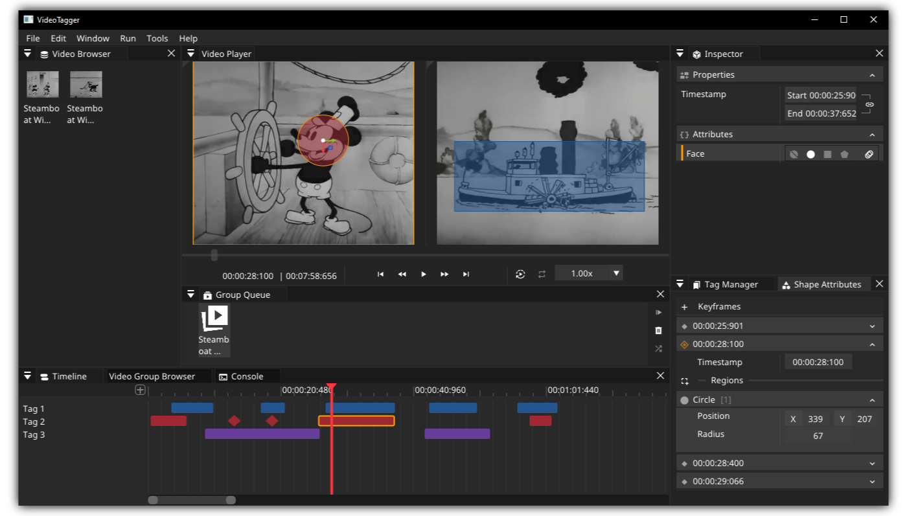

|
VideoTagger 0.1.0
|
|
VideoTagger 0.1.0
|

Download the repository with:
If the repository was cloned non-recursively run:
Install uv package manager:
On Linux install the following packages:
In the root directory run:
[!Warning] Building on macOS is untested
Replace <BUILD_PRESET> with one of the presets:
<SYSTEM>-x64-debug<SYSTEM>-x64-release<SYSTEM>-x64-shippingwhere <SYSTEM> is windows/linux/macos
You can also show all available presets with
In the root directory run:
To build the documentation run:
Before packaging make sure to build the project with the -shipping preset. Then go to the root directory and run:
This software is licensed under the MIT License.
This software uses LGPL-licensed libraries from the FFmpeg project.
FFmpeg is an open-source framework licensed under the GNU Lesser General Public License (LGPL) version 2.1 or later. However, FFmpeg incorporates several optional parts and optimizations that are covered by the GNU General Public License (GPL) version 2 or later. If those parts get used the GPL applies to all of FFmpeg.
For more information regarding FFmpeg license and legal considerations see https://www.ffmpeg.org/legal.html.
[TOC]